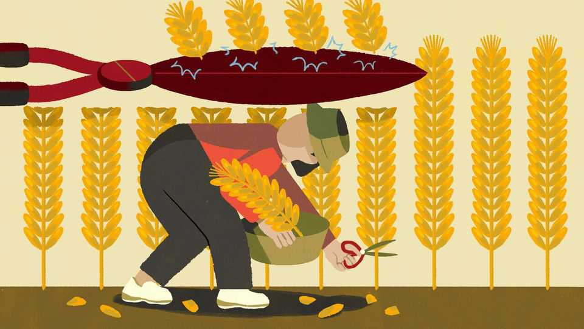

China’s hidden levies are becoming more visible
Taxpayers now owe more. But is more owed to taxpayers?

Oct 15th 2026
Among tax evaders, from Al Capone to Cristiano Ronaldo, Wu Huatao hardly stands out. Still, the small-time salesman deserves recognition for his brazenness. According to Shanghai’s tax bureau, Mr Wu earned about 550,000 yuan ($82,000) per year but reported just 9,000 yuan. He also claimed an exemption as an ocean-going seafarer when he was, in fact, a landlubber. Then, when tax officials called him, he blocked their numbers.
The authorities ultimately got their man. After they had subjected Mr Wu to what they caringly described as “face-to-face education” on income-tax policy, he fessed up to his misdeeds and paid his taxes and fines. This is just one of many similar cases as China cracks down on evasion. A big deadline looms on October 22nd, when wealthy Chinese must comply with a new tax on offshore trusts or face penalties for late payment.
The heightened enthusiasm for tax collection naturally raises economic questions. Does it reflect a state that is strapped for cash? Probably. Extra revenue is needed to plug gaping budget holes. Might the rules spook Chinese investors? Possibly. But many are captive in their home market. Who will benefit most? That is easy: tax advisers.
Yet there is a separate, more combustible angle to consider: whether the Communist Party faces any political risk from pushing too hard on taxation. No one is throwing green tea into Ningbo’s harbour for now. But Chinese taxpayers, like those anywhere, want to know that the government is not wasteful. And demands for budget accountability are discomfiting for a regime allergic to popular representation. So the trick for Chinese officials is to ensure that cash flows into state coffers without prompting people to dwell on their putative rights as taxpayers.
China’s fiscal system has long been calibrated to do just that. Personal income tax is equivalent to about 1% of GDP, compared with an 8% average in rich countries. Thresholds are so high that only 65m people—a tenth of the workforce—pay any at all. China makes up for this partly with indirect taxation, especially a value-added tax (VAT) that is baked into prices for consumers. It also has non-tax revenues, mainly from land sales. Taken together, these let China extract resources so thinly that people do not feel the pinch. Zhang Changdong of Peking University has argued that the vast majority do not know what they pay in taxes—blissful ignorance as far as the party is concerned.
Yet the system has flaws. When consumption taxes are relied on so heavily, they hit poor people hard because the less well-off spend a bigger share of their incomes. The wealthy technically face much higher income taxes but have many loopholes to reduce their bills—including, until recently, offshore trusts. More pressing for the government, the tax structure no longer raises enough revenue. Local authorities, which had relied on land sales for much of their income, now face widening budget deficits amid a prolonged property slump.
That is what makes the new taxation drive so significant. Previously officials went after the odd celebrity, such as Fan Bingbing, an actress ordered to pay a whopping 883m yuan in 2018, to show that the wealthy are not a law unto themselves. Now China’s taxation efforts are much broader. Virtually every transaction is digital, and authorities have honed their technology for parsing the data—a system known as Golden Tax Phase IV. They comb through bank statements and transactions on Alipay and WeChat, China’s main digital wallets. All this monitoring is buttressed by co-operation with tax agencies in many other countries.
Over the past year people with foreign accounts have received alerts in their income-tax apps warning them to comply with laws. The ultra-rich could owe mammoth sums, enough to unsettle financial markets. Shu Ping, a co-founder of Haidilao, a hotpot chain, sold a nearly 5% stake in September, worth about HK$2.75bn ($350m). The firm cited personal funding needs; analysts suspected a tax bill. Haidilao’s share price fell by more than 10%. Other bosses—especially those whose foreign listings suggest wealth offshore—may also be in line for hefty back taxes.
A private-equity manager recently moaned to Chaguan that his tax bill had blindsided him. The government’s new rule on overseas trusts did not exempt existing arrangements; it had applied the tax retroactively. But he had to resign himself to paying up. The government is counting on a couple of things. The rich do not really have anywhere to run, short of changing their citizenship and abandoning their businesses and assets in China. And most of the population will remain untouched, and indeed might enjoy seeing more fortunate compatriots pay up.
Yet Mr Wu, the hapless tax-evading salesman, is a reminder that the dragnet does not stop at tycoons. Anyone with side income or a foreign brokerage account is now visible to tax authorities. That describes many middle-class Chinese, precisely those who are likely to wonder what they are getting in return. In the early 2000s state media occasionally spoke approvingly of “taxpayer consciousness”—the idea that those paying taxes ought to have some oversight of public budgets. Such talk has faded as the state has tightened its grip on the media. Instead of taxpayers’ rights, the emphasis has been on their duties. Beijing’s tax office recently listed managing public sentiment as a key part of the new reforms—a euphemism for nipping criticism in the bud.
Fiscally, a shift to more direct taxation is right for China, promising a system that is fairer and more sustainable. Politically, it is a calculated gamble. China is making the taxman a bigger, and more intrusive, presence in everyday life. People who pay more tend to ask for more. ■